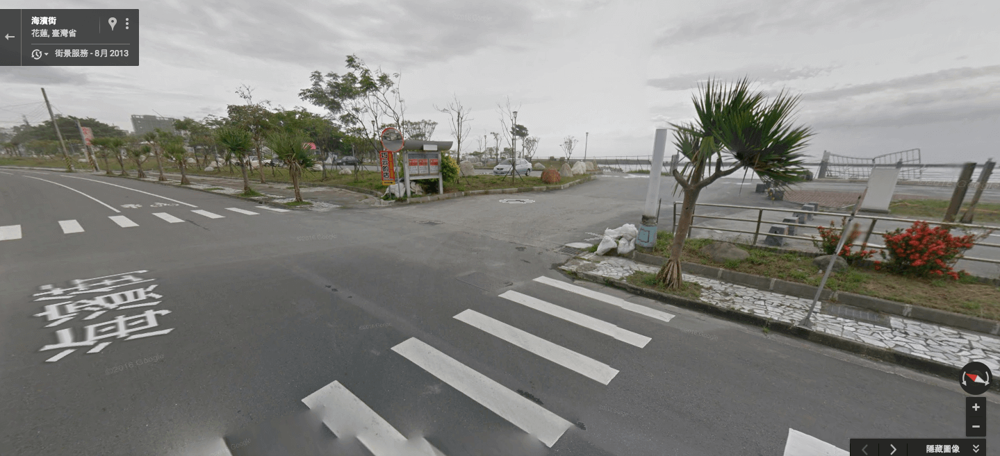
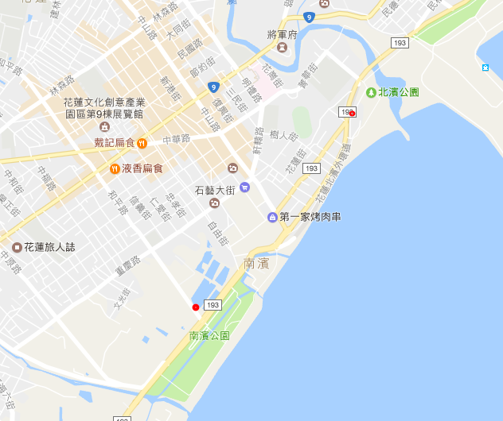
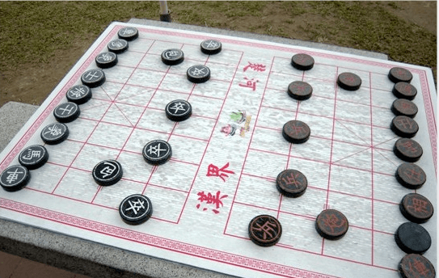
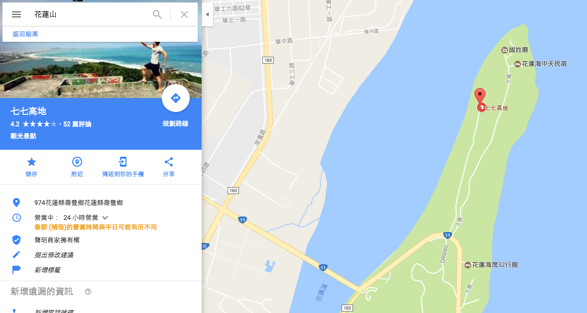
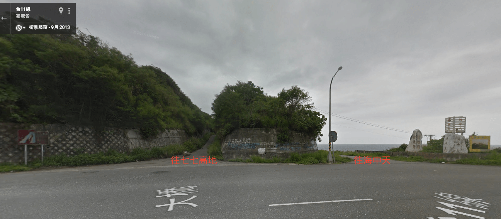

凱特的花蓮觀遊集錦
自從蘇花開通後，東部像是多了一道門，越來越多親朋好友你鄰居不遠千里來到東部踏踏青，離門口最近的宜蘭被開發地早，後來花蓮也相繼有蓬勃的發展。
小編當年看著一個學校簡介，被迷惑地不要不要的，就這麼來到了花蓮
，一待就是五年，從原始（ㄏ ㄨ ㄤ ㄌ ㄧ ㄤˊ）的景色到改建後的繁華景象，
真心覺得這一趟旅程像是在時空中穿梭般令我難忘，是一個此生必遊一次的好地方，所以小編特別整理出小部分（跋山涉水就不收錄了）的景點，也都是小編直到現在仍然一訪再訪的景點。
花蓮景點
知卡宣公園
- 地址：花蓮縣吉安鄉中正路二段299號 (花蓮監理站對面)
- 開放時間：8:00~18:00 (戲水區僅暑期開放)
- 門票：免費
- 參考文：
[暑期版] http://ppt.cc/jfpqa
[非暑期版] http://ppt.cc/xJ4Sn小編推薦：園區內包含植物園區、迷宮樹叢和各式大大小小植物與花的造景，也有小朋友遊憩區，非常適合拍照。園區佔地面積不小，建議停留兩小時以上。
台肥海洋深層水園區
- 參考文： http://ppt.cc/XWm14
小編大驚！！台肥海洋深層水園區全面設備檢修公告， 最後營業日為2016年11月28日。
花蓮太平洋公園（原南濱公園）+ 北濱公園 + 北濱外環道+和平公園鏈狀行程
- 地址：
南濱公園大門口位在『台11線』『和平路』路口。
北濱公園汽車入口位在『北濱街』『海濱街』交接，直行5公尺，位在正右方（很容易錯過呦）。
和平公園在北濱公園往北過去一點，很明顯(找不到不要揍小編，要去配新眼鏡XD)。
 - 開放時間：24hr
- 門票：免費
- 參考文：
[太平洋公園] http://ppt.cc/IOSAM
[北濱公園] http://ppt.cc/rqWNN
[和平公園] http://ppt.cc/NJmBf小編推薦：太平洋公園是個適合拍照、看海的景點，可是小編找不到有關「觀音大佛涼亭」和另一側高台的旅遊文（愁眉），部落客怎麼會不知道上面可以眺望太平洋呢！！！
建議您可以沿著自行車步道，一路漫遊、愜意地與太平洋交換心情，向北行，可一路通往北濱公園。
這裡，小編提醒徒步的遊客，準備好跑半馬的精神，或者，轉而開車、騎車沿著海濱街一路向北（千萬不要回頭，因為濱海街是單向道XD由北向南行請改走隔壁的北濱街）

晚上整條自行車道會打燈，當然這裡的光廊還稱不上五光十色，對於在外當遊子的小編來說，卻也有它單純的投射、簡單的浪漫。只是，提醒大家，這裡晚上人不多請注意安全。
接著，北濱公園相較之下，就比較小一點，除了幾個藝術裝置可以拍拍照之外，同樣能欣賞太平洋，不小心在廣場還會偶遇表演團體（很少）。
對小編來說，這裡最美的回憶是沙灘排球，所以不要問我是不是「好山好水好無聊」XD 有心，哪兒都是最美的風景呀，您說是吧～？
最後，和平公園是一個翻新後的小公園，新設了一個『和平鐘』，聽說敲敲鐘可以許願（搞得像是神社，不過要記得還願喔XD）。
偷偷說，小編曾在半夜兩點多，夜遊去!!敲鐘!!，當時我許一個世界和平（笑，暫時不用還願），因為自覺有點白目，還探了個頭，確定應該沒有人來投訴（拍謝）
其實住宅區離公園還有一段，大家可以安心敲鐘喔！
吉安慶修院
- 地址：973花蓮縣吉安鄉吉安村中興路345-1號
- 開放時間：08:30~17:00
- 門票：全票 30 半票 15
- 參考文：http://ppt.cc/ZwkQi
小篇推薦：這裡是個…拜拜的地方，其實以前有幾座「巨型橡棋桌」，現在已經撤掉，多了Q版神明，也多了一點銷售中心的味道，
但是小編就是喜歡這裡的日式建築和庭院深深深幾許的味道。小編提醒週末假日遊客甚多。

花蓮美食
東大門
- 炸螃蟹 http://ppt.cc/5rNgz
小編推薦：小編覺得當零食、配啤酒都不錯！
蒲公英歐風甜點
- 地址：花蓮市忠義二街12號
- 營業時間：13:00~19:00 (週三、四公休)
- 參考文：http://ppt.cc/GDJHr
小編推薦：當年花蓮第一家正港洋果子「法式邊境」入駐，小編也是愛到一個不要不要的，沒有它的出現，小編可能會一直屈就於…喔！
小編是說其他『百艾』、『蒨魔法』、『花漾洋菓子』、『棉花甜』、『喜品家』、『弘宇蛋糕』…等等的蛋糕也是很好吃呢（滴口水），小編有機會再推薦他們，
這裡只是要表達後來一堆人，爭先恐後地到法式邊境一嚐「藍帶來著的洋果子」，就這麼反骨地，小編發現第二家藍帶回來的點心店，個人很喜歡這家的檸檬塔。
店內裝潢和店外的電話亭，都是老闆當年旅經英國愛上的景色。雖然價位偏高，但是不訪來坐坐吧！
一碗小
- 地址：花蓮市明禮路14巷1號
- 營業時間：週一～週日 11:00~14:00 17:00~20:00 (週三公休)
- 參考文：http://ppt.cc/ceUvK
小編推薦：一碗小點餐很簡單 湯頭（清燉/紅燒）、肉（羊/牛）、主食（麵線/冬粉/拉麵/泡饃）各選一。
泡饃是什麼勒？泡饃是一種北方麵食，長得像是圓燒餅，口感厚實（偏硬），泡進湯裡後餅香吸附著湯頭的甜，別有一番風味。
小編清敦紅燒牛羊冬粉泡饃都吃過，因為小編口味偏淡，所以還是偏好清燉，羊肉不騷、牛肉不柴，肉鮮都滾進了湯頭裡，非常值得一吃！
源寶屋咖哩麵包
- 地址：花蓮縣花蓮市仁愛街77號
- 營業時間：11:30~賣完為止
- 參考文： http://ppt.cc/UL3rT
小編推薦：小編一直覺得咖哩麵包好像沒什麼特別的，奇怪了，好多朋友說『超好吃』！
小編半信半疑也走近了店舖，一瞧，看到是炸的！小編當場掉頭走人，我的媽呀，又是咖哩麵包又是炸的，小編完全無感呀。
後來，隔壁老王說：就吃一口，不喜歡也不會食物中毒，所以我咬了一口，竟然完全不油膩、咖哩還鹹甜地很有默契耶！不多說，有經過記得去吃一個！
小編景點
翡翠谷
- 地址：翡翠谷（小編不是故意不告訴你 > < Google會告訴您走台9丙省道，在仁壽橋前轉入銅門村，從銅門橋北端附近沿木瓜溪旁山路步行而入即可到達翡翠谷『門牌』，請依牌子前進）
- 參考文：http://ppt.cc/xhl1V
小編推薦：要進翡翠谷之前，記得配載『手電筒』，這很重要！因為您將穿越（大中午）伸手不見五指的蝙蝠洞，手機手電筒也僅能讓你看見前方一公尺範圍的路，是一個很難得的體驗，出洞口的剎那猶如走進桃花源之感。
接著，你可能需要帶上小編…的電話，依指示往上往下爬爬爬（小編實在是不知道該如何描述，容我跳過），抵達這一處翡翠谷並不是一個壯麗的瀑布，卻有著小而美的流水，傾瀉而下，再匯聚成小溪流，炎熱的夏天很適合戲水（ㄒ一ˇ ㄐ一ㄠ ˇ），是一個安全的小瀑布。
但是，目前仍然沒有相關單位開拓道路，行徑路間有一段陡坡與鬆動的流石，不建議帶小朋友前往。
雲山水 - 實地走訪優養化的湖泊
- 地址：花蓮縣壽豐鄉豐坪路二段2巷201弄12號
- 門票：免費
- 開放時間：24 hr
- 參考文：http://ppt.cc/FfQy9
小編推薦：小編第一次走訪雲山水就深深被那一片數林與湖泊相映所吸引，當時周邊的民宿都還在挖地基。
兩三年後，民宿林立各具特色，幾處彩繪牆和可愛的木牌也增添攝影樂趣，這裡是小編覺得怎麼拍都詩情畫意的絕佳景點。
小編提醒，整個園區走一圈大概需要半小時。另外，以前雲山水入夜後無光，小編曾經夜探雲山水，驚見滿天星空，但是現在就不得而知了。
牛山呼庭
- 地址：花蓮縣壽豐鄉水璉村牛山39-5號（台11線約26.6公里）
- 門票：50 元/人，可以抵消費 50 元
- 開放時間：10:00~19:00
- 參考文：http://ppt.cc/mvdBo
小編推薦：牛山呼庭一直都是私有地，所以收取門票還算合理。牛山呼庭後有一大片草地、木雕藝術作品和小木屋，前有一望無際之大海，也開放了海灘。
東部越來越多海灘和溪流被限制下水，而牛山呼庭仍保留了一大片海灘，實在難得，小編非常推薦晚霞時分坐一回，聆聽海浪拍打、落幕與海相輝映，
也可以往（面對）沙灘右方的岩洞中走（那兒浪比較平），是電影『沈默』的拍攝場景（影帝李奧納多曾造訪喔！），在岩邊攝影亦是好風光，
或是爬上草地最高處，依著『幸福鐘』眺望海洋也是一場浪漫。
海中天 - 颱風天觀浪好去處
- 地址：詳見七七高地
- 門票：免費，餐飲另外點餐付費
- 開放時間： 24hr
- 參考文：http://ppt.cc/nQgaV
小編推薦：小編先承認在花蓮的日子幾度颱風天觀浪，特此聲明這是危險的行為『盡量』不要去做XD 其中一個景點就是「海中天」，這裡是民宿，但是有對外開放，不過如果您不是房客，您的車輛勁量不要開近民宿內的停車區（發揮愛心）。
小編推薦的契機只是一次觀浪，小編有一群傻子朋友聽見當天 14:00 陸上警報即將發佈，竟然說要去海中天觀浪，當時風大到每個人臉頰都啪嗒啪嗒響，浪就更不用說那是衝天地拍打，半山腰都已在海中，小編被那時的驚濤駭浪深深印了一個像。
其實呢～一般時日這兒的浪沒這麼雀躍啦，躺在觀景台的躺椅上看看浪花也是不錯、旁邊還有民宿老闆養的小動物（雞、鳥…等），有些關著、有些在外跑跑跳跳追著小朋友，可愛極了！
順帶一提，小編有張過這兒餐廳的價目表，想吃東西是有的，價位就是觀光價。
七七高地
- 地址：過花蓮大橋（小編自作主張稱它是遠雄大橋）行經台11丙公路往台東方向，看見海中天扛棒，有兩條岔路，右邊往海中天，左邊就是往七七高地。

 - 門票：免費
- 開放時間：24hr（但是晚上沒有燈喔！）
- 參考文：http://ppt.cc/Up3Bb
小編推薦：小編又要提到一群傻子朋友，腦子裡沒一個計畫的，盡是精血衝腦地說走就走、說轉就轉，還特別喜歡找一些『這時間去那幹嘛』的地方，沒錯，晚上八點說晚不晚，可是七七高地上沒燈啊！
一群傻子（包括小篇本人，遮臉）搬上烤肉架，衝去生鮮超市買些菜啊肉的，就上去烤肉看星星，那時我以為七七高地只是個看星星的好去處。
其實，白天可以看太平洋耶！而且遠眺花蓮大橋到七星潭一覽無遺，雖然同樣是看海，七星潭是近距離的體驗、南濱北濱那是退了幾步感受海浪的奔騰、上了山的七七高地看的是海的寧靜與遼闊，不同的高度，那感覺還是很不一樣的。
當然，花蓮看海的地方這裡還繁不及備載！下次走訪遠雄何不順道登山一趟吧！小編補充，有部落客不建議開車上去，但是到達丘頂其實路程不近（約），騎車上去只需要注意草滑，而開車上去會有刮底盤的必要，所以步行、騎車或開車自行斟酌囉！